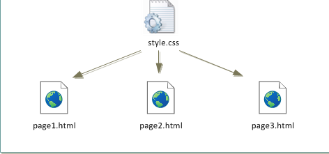
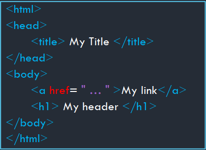
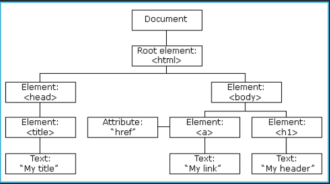
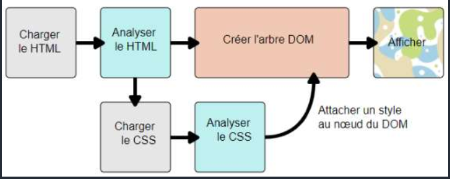

Mettre en forme : le CSS
Séparer le fond et la forme : un exemple avec un traitement de texte
Activité avec un traitement de texte
- Téléchargez puis ouvrez le fichier
StylesModeles.odtavec Libre Office. - Allez à la page 5 du document.
- Ouvrez la fenêtre de style en appuyant sur F11.
- Déployez le menu
Style par défauten appuyant sur +. - Déployez de même le menu
Titre, puis cliquez droit surTitre 1, puismodifier. - Passez la couleur de la police en rouge, puis activez un surlignage simple en jaune. Validez puis observez le document.
- Quelles parties ont été changées ?
- Y-a-t-il eu des changements sur d'autres pages ?
- Qu'ont en commun toutes les zones changées ?
- Dans la fenêtre de style, modifiez
Liste Puce 1en ajoutant une lettrine, et en ajoutant au fond un dégradé de tpeRadial. Observez les modifications du document. - Allez à la page 31, partie 5.2.c, sélectionnez les éléments de la liste à puce, et changez le style de celle-ci, qui est actuellement en
Liste Puce 1, enListe Puce 2. le texte at-il été changé ?
Séparer le fond de la forme
Un même document numérique peut être lu de différentes manières :
- sur un écran couleur ;
- par un logiciel de synthèse vocale ;
- sur un écran monochrome ( ou dans la console) ;
- sur un écran de smartphone ;
- par une impression sur un papier A4, ou A3, ou autres formats ;
- ...
Pour éviter de créer un document différent pour chacun de ces supports, l'idée est apparue à la fin des années 1960 de créer une séparation complète entre la structure logique d'un document (titres, chapitres, paragraphes, illustrations...), et sa mise en page, qui dépend du support de présentation, et qui est définie en dehors du document lui-même dans une ou plusieurs feuilles de style, regroupant police, style, taille et couleur des caractères, alignement et espacement des paragraphes...
Cascading Style Sheets
Définition
CSS
CSS est l'acronyme de Cascading Style Sheets, soit Feuilles de Styles en cascades en français. Un fichier CSS est appelé par une ou plusieurs pages HTML (entre autre), et associe à certaines balises et/ou attributs html certaines caractéristiques graphiques, à l'aide d'un sélecteur de balises.
Pour utiliser une feuille de style nommée toto.css dans une page html, il faut inclure entre les balises <head> et </head> la ligne suivante :
<link href="toto.css" rel="stylesheet" type="text/css"/>
Exemple
Dans l'exemple ci-dessous, le fichier style.css est utilisé par les différentes pages html :

Déclaration d'une règle CSS : vocabulaire associé et premiers exemples
Vocabulaire
Au sein d'un fichier CSS, on déclare des règles, qui vont permettre la mise en forme d'éléments bien précis. Par exemple :

- le sélécteur
psignale que les déclarations suivantes s'appliquent à toutes les balises<p>et</p>. Toutes les déclarations doivent être à l'intérieur d'une paire d'accolades ( Ctrl+Alt+` ou AltGr+` donne { et Ctrl+Alt+= ou AltGr+= donne }). - la propriété
colorindique que la règle concerne la couleur de police ; - la valeur associée
redindique que la couleur de police sera rouge ; - la déclaration est terminée par un point-virgule (c'est important !), et propriété et valeur sont séparées par un symbole deux-points.
Il est possible et même souhaitable d'effectuer plusieurs déclarations au sein de la même règle. Par exemple, la déclaration suivante est parfaitement valable :
h1 {
color : magenta;
background-color : lightblue;
font-style : italic;
font-size : 3em;
font-variant : small-caps;
}
Il existe des dizaines de propriétés et des centaines de déclarations possibles. Pour les trouver je vous conseille fortement le site MDN webdocs et surtourt (mais en anglais) W3Schools.
Vous pouvez essayer de modifier le CSS dans le bac-à-sable suivant sur capytale.
L'inspecteur d'objet
Il est possible dans Firefox, comme dans de nombreux navigateurs actuels, d'afficher les informations d'une page web, y compris bien sûr les styles CSS attachés à cette page. Dans Firefox, vous obtiendrez cet inspecteur de style par l'intermédiaire des touches Ctrl+Shift+I, ou bien par Menu > Outils supplémentaires > Outils de développement web.
L'intérêt de l'inspecteur est de pouvoir modifier à sa guise les attributs et valeurs CSS d'une page web et d'en voir immédiatement les effets. Les modifications sont bien entendues locales (elles ne sont valables que sur la copie de la page web dans votre navigateur, vous ne modifiez pas vraiment la page web réelle... Et heureusement !!!)
Exercice : Modifier une page web existante
- Rendez-vous sur la page https://www.zonensi.fr/SNT/Web/CSS/.
- Ouvrez l'inspecteur d'objets.
- Cliquez sur la petite flèche située à droite de la barre de menu de l'inspecteur, puis sélectionnez ensuite le titre de la page
Mettre en forme : le CSS. - Vous devez voir apparâitre toutes les déclarations dont dépend le titre de la page. Ajoutez au sélecteur
.md-typeset h1la déclarationbackground-color : pink. - Enjoy

Les sélecteurs en CSS
Le DOM, ou comment ça marche en vrai !
le DOM
Le DOM, ou Document Object Model est une interface de programmation pour des documents HTML ou XML qui représente le document (la page web actuelle) sous une forme qui permet aux langages de script comme le JavaScript d'y accéder et d'en manipuler le contenu et les styles.
Le DOM est ainsi une représentation structurée du document sous forme « d'arbre » crée automatiquement par le navigateur
 
Pratiquement,le DOM est créé à partir du code HTML, et chaque style CSS est attaché à un noeud du DOM :

Pour atteindre en CSS un noeud du DOM, ou pour interagir avec lui, il faut utiliser le bon sélecteur.Il est possible de cibler de manière très précise des éléments d'une page web par l'intermédiaire de ces sélecteurs. La syntaxe permettant d'effectuer ce ciblage est très précise, mais particulièrement efficace quand elle est bien utilisée. L'objectif du cours n'est pas d'apprendre tous les sélecteurs, mais d'en discerner les plus utiles.
Sélecteur de type :
Cible toutes les balises d'un certain nom. Par exemple :
body {
background-color : black;
}
p {
color : green;
}
Sélecteur de classe :
Il est possible de regrouper des balises, même différentes, en leur donnant un attribut class. Toutes les balises possédant le même attribut class peuvent être alors ciblées en ajoutant un point . précédant le nom de la classe. Par exemples :
- cibler toutes les balises possédant l'attribut
class="definition"
.definition {
color : red;
border-width : 2px;
border-style : dashed;
}
- cible les titres de rang
h2et possédant l'attributclass="chapitre"(les autres balises possédant uniquement l'un des deux attributs ne sont pas ciblées)
h2.chapitre {
text-decoration : underline;
}
Sélecteur d'identifiant :
Il est aussi possible de spécifier une balise spécifique en lui attribuant un identifiant unique par l'intermédiaire de l'attribut id. Par exemple, pour cibler la balise possédant l'attribut id="titresite", on utilise le symbole # :
#titresite{
text-align: center;
}
Sélecteur d'enfants :
Cible toutes les balises descendantes directes d'un autre élément. Par exemple :
body > p {
background-color : red;
}
Ici on sélectionne les balises p qui sont directement héritées de body (c'est-à-dire directement encadrées par les balises <body> et </body>).
Sélecteur de descendants :
Cible toutes les balises qui descendent d'un autre élément Par exemple :
body p {
background-color : red;
}
Ici on sélectionne toutes les balises p qui sont à l'intérieur de <body>...</body>.
Sélecteurs de pseudo-classes
Lors de la construction de l'arbre du DOM, certaines pseudo-classes sont ajoutées automatiquement à certains noeuds. Il est possible d'intéragir avec ces pseudo-classes :
-
:first-child: Cible un élément quand il est le premier enfant d'un autre élément.Existe aussi en versionli:first-child { background-color : yellow; }:last-child,:nth-child, je vous laisse rechercher les possibilités en ligne. -
:hover: Cible un élément quand il possède la souris le survole.h1:hover { font-size :5em; } -
:link: Cible un lien qui n'a pas été visité.a:link { text-color : red; } -
:visited: Cible un lien qui a été visité.a:link { text-color : orange; }
Il existe bien d'autres pseudo-classes. Comme toujours Mozilla a fait un travail remarquable de documentation.
Ordre d'application des sélecteurs
Priorité des sélecteurs
Il existe une priorité des sélecteurs, tout comme existe une priorité des opérations arithmétiques. Il s'agit d'une norme, donc par nature elle est à connaître pour éviter les comportement erratiques du CSS :
- La mise en forme définie pour le sélecteur le plus précis l'emporte (
idest plus précis queclassqui est plus précis que le nom de la balise). - Le dernier défini est appliqué lorsque le niveau de priorité est égal.
Les boîtes CSS...
Cette partie est quasiment copié-collée depuis MDN Mozilla.
Une boîte...
Vous verrez rapidement qu'avec les CSS, tout tourne autour de boîtes : définir leurs tailles, leurs couleurs, leurs positions, etc. Les éléments HTML d'une page peuvent, pour la plupart, être vus comme des boîtes placées les unes sur les autres.
Chacun de ces blocs prend un certain espace sur la page, de cette façon :
padding: l'espace autour, proche du contenu (par exemple, l'espace autour du texte d'un paragraphe) (en français, on pourrait traduire cela par du « remplissage » mais le terme padding étant communément utilisé lorsqu'on parle de CSS, on continuera à utiliser ce terme)border: la ligne qui est juste autour du padding (en français cela correspond à la bordure).margin: l'espace extérieur, autour de l'élément (en français cela correspond à la marge).

Des boites !
Chaque élément possède par défaut un type de placement :
- élément
block: un élémentblockoccupe par défaut toute la largeur de l'écran. Quand des élémentsblocks'enchainent, ils sont les uns au dessus des autres. Par défaut les éléments<h1>,<h2>,...,<h6>,<p>et surtout<div>(balise générique de typeblock) sont des éléments de typeblock. - élément
inline: un élémentinlines'insère dans la ligne de texte, sans générer de saut de ligne avant ou après.Par défaut les éléments<a>,<img>,<strong>,...sont des éléments de typeinline.
Il existe bien des subtilités concernant les éléments inline et block, qui dépassent largement le cadre de ce cours. Ce document permettra peut-être de répondre à certaines questions que vous poyurriez vous poser.
Modifier le type d'un élément : display
Il est possible de spécifier explicitement pour un élément son type d'apparition dans le flux de données d'une page html. Pour cela on utilise la propriété display et ses différentes valeurs :
none: retire l'élément des éléments disponibles. Cet élément ainsi que ses descendants ne sont plus accessibles.block: rend l'élément de typeblock;inline: rend l'élément de typeinline;grid: insère l'élément comme élément d'une grille(ou tableau) ;flex: insère l'élément comme élément de dimension flexible - outil à privilégier pour rendre la page ou le site visible sur différents appareils. La documentation en ligne est très bien faite.
Les dimensions et unités de mesures les plus utiles
En CSS, il est souvent impératif de donner des longueurs, ou des bases de dimensions pour les éléments. Les unités sont nombreuses, souvent mystérieuses ou absconses pour nous européens. En voici quelques types :
- valeur en pourcentage :
font-size : 120\%;définit une taille de police valant 120% de la valeur de l'élément parent. Il ne faut pas d'espace entre le nombre et le symbole %. - hauteur
em: cadratin, ou hauteur de la fonte dans une police donnée égal à la largeur du caractèreM.font-size : 1.5em;écrira le texte 50% plus gros que la taille de base utilisée, qui est par définition de1em. - valeur en pixels : il est toujours possible de calculer une taille en pixels, mais l'application exacte dépend du navigateur utilisé. Par exemple
width : 50px;mettra la largeur de l'élément à 500 pixels. A proscrire sauf cas particuliers. - valeur en unité relative à la largeur de la fenêtre :
margin-left : 50vw;permettra de créer une marge à gauche de la boite valant 50% de la largeur de la fenêtre. - valeur en unité relative à la largeur de la fenêtre :
margin-left : 50vh;permettra de créer une marge en haut de la boite valant 50\% de la hauteur de la fenêtre.
Adaptation aux différents écrans/médias de sortie
Jusqu'aux années 2010, les sites web étaient souvent conçus pour n'être lus que sur des écrans d'ordinateurs. Depuis, les smartphones sont arrivés, avec leurs nombreuses tailles d'écrans différentes, et leur capacité à basculer du format portrait au format paysage.
Afin d'afficher correctement un site web, il faut donc prévoir à l'avance, dans le fichier css, différentes version du site. Pour cela on utilise des media-queries - soit requêtes de media. Il s'agit d'un type particulier de commande qui évalue certaines caractéristiques du média utilisé pour lire le site.
Il existe de nombreuses requêtes, mais en pratique nous n'utiliserons que les deux requêtes suivantes :
max-width: applique les règles si la largeur de l'écran est inférieure ou égale à la taille donnée en pixel ;min-width: applique les règles si la largeur de l'écran est supérieure ou égale à la taille donnée en pixel ;
Exemple
L'exemple suivant provient du document Outils CSS pour le responsive design d'Alexandre Niveau, sur le site de l'Université de Caen.
/* version par défaut: sur grand écran */
.menu {
width: 30em; /* etc. */
}
/* écran plus petit: on passe le menu en horizontal */
@media (max-width: 100em) {
.menu { width: 100%; }
.menu li { display: inline-block; }
/* etc. */
}
/* écran encore plus petit: on cache le menu */
@media (max-width: 50em) {
.menu { display: none; }
}